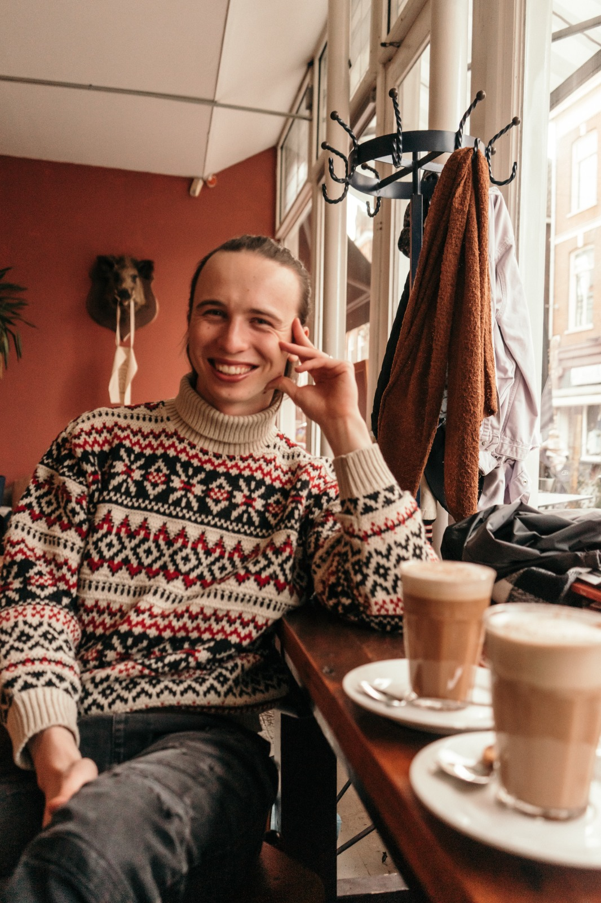

Clinical research · data analysis · statistics
Petr Šupa
Clinical research analyst with 3+ years of clinical and behavioural research in the Netherlands, the USA and Czechia. I run trial workflows, harmonise and clean clinical data, and turn longitudinal analyses in R into clear reports.

Work experience
Six research roles, clinical research first.
09/2025 – present Hybrid · Prague, Czechia
Clinical Research Analyst Current
National Institute of Mental Health · Psychedelic Research Center
Clinical data harmonisation, quality assessment and cleaning. Phase I RCT data extraction, analysis and reporting.
06/2025 – present Remote · Atlanta (GA), USA
Clinical Research Analyst Current
Emory University School of Medicine
Safety monitoring in a naturalistic setting. Longitudinal analysis of real-world daily outcomes and statistical reporting. NIH funded.
10/2024 – 08/2026 Hybrid · Amsterdam, Netherlands
Clinical Research Assistant Clinical
Amsterdam UMC · Medical Psychology
Trial workflow from study start-up and recruitment to follow-up, data extraction and harmonisation. Clinical population analysis. ERC funded.
01/2024 – 07/2026 Nijmegen, Netherlands
Research Assistant / Analyst
Behavioural Science Institute · Radboud University
Meta-analysis data extraction, behavioural subtyping with a clustering algorithm, study design and ethical review submissions.
10/2023 – 08/2026 Nijmegen, Netherlands
Methodology & Statistics Teacher
Radboud University · School of Psychology
Seminars on research methodology and statistics. Supervision of 40+ undergraduate quantitative research projects.
10/2023 – 07/2024 Nijmegen, Netherlands
Clinical Research Assistant Clinical
Behavioural Science Institute · Experimental Psychopathology and Treatment
Study start-up, participant recruitment, on-site behavioural and self-report data collection, preprocessing and analysis.
Education
Two Research Master's degrees, both Cum Laude.
Radboud University · 2023–2026
MSc Behavioural Science (Research)
Methodology, statistics and clinical research at the Behavioural Science Institute.
Cum Laude
120 ECTS
Radboud University · 2024–2026
MSc Cognitive Neuroscience (Research)
Lifelong learning and neuroplasticity at the Donders Institute, with a Neurophilosophy minor.
Cum Laude
137 ECTS
Charles University · 2020–2023
Bc. Social Sciences & Humanities
Psychology and Life Sciences Department, Prague, with two Erasmus+ exchanges in Nijmegen.
Top 10% of students
234 ECTS
Radboud Honours Academy
Honours Academy Graduate
Eight-month citizen participation project with a municipality and an external internship grant.
Citizen Participation Initiative
External Internship Grant
Projects
Safety, measurement and preregistered analyses.
Emory University · Preregistered
Adverse events after naturalistic psilocybin use
Safety analysis of adverse events in the PUNS study, from multi-day repeated daily measures.
OSF preregistration ↗NIMH Czechia · First author · Preregistered
Psilocybin and emotion recognition (Phase I RCT)
Effect of psilocybin on emotion recognition in healthy subjects, using a dynamic emotional morphing task.
OSF preregistration ↗Amsterdam UMC · First author · Preregistered
Emotional control in gender-affirming therapy
Longitudinal changes in emotional conflict control, using Bayesian mixed models with a ROPE approach.
OSF preregistration ↗Emory University · Manuscript in preparation
Daily-life measure of psychedelic effects (TRIP)
Development and pilot of an ecological momentary assessment measure: acceptability, feasibility, adherence.
Earlier work, including my Bachelor's thesis (survey, N = 430) and a qualitative interview project, is listed in the CV.
Skills & highlights
Tools for clinical data.
Methods and software
- R / RStudio
- Clinical data harmonisation
- Data quality and cleaning
- RCT data analysis
- Longitudinal data
- Bayesian mixed-effects models
- Multilevel modelling
- Ecological momentary assessment
- Statistical reporting
- Preregistration
- Python / PsychoPy (basics)
- MATLAB (basics)
- GitHub (basics)
- English and Czech (C2)
Selected highlights
- PSY-NET Methodology & RCT Working Group Active member. Co-presented a talk on blinding and control arms in psychedelic trials.
- Conference talks Two talks and a poster across three conferences in 2026. Upcoming talk at the 69th ČNPS.
- Grants and scholarships Over €12,000 from Erasmus+, Radboud Honours Academy and conference scholarships.
- Leadership Former chair of a study association's education committee.